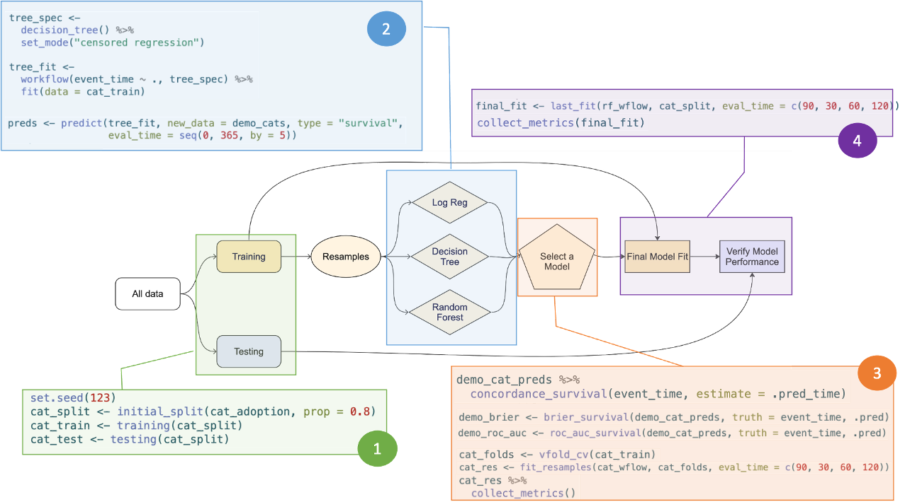

The useR! conference series is the conference for R enthusiasts. This annual event fosters a vibrant and diverse community where data scientists, statisticians, and developers can network, learn, and contribute to the growing ecosystem of R. This years event was hold in Salzburg, Austria, the home of Mozart.
This years program encompassed one day of half-day workshops, where I grabbed the opportunity learn more about Data Anonymization for Open Science Data and, in the afternoon, running survival analyses using tidymodels. The rest of the conference was filled with many inspiring talks (see blog post useR! talks), and many things to take home, below are just a few snapshots of some of my personal highlights and take home messages.
useR! 2024 · Workshops
Data Anonymization for Open Science Data · Jiří Novák, Marko Miletic, Oscar Thees, Alžběta Beranová
All the material of the workshop you find in the GitHub repository.
This workshop started out with a general methodological overview and key concepts of what is known as the field of Statistical Disclosure Control (SDC). We learned about different forms of disclosure (re-identification), the risk-utility trade-off, and the different disclosure methods. These methods correspond basically to two approaches:
Altering original data using non-perturbative or perturbative masking.
Generating synthetic data based on models trained on real world data.
Considering approach (1), we learned about the functionalities of the sdcMicro package by Matthias Templ and colleagues. It allows you not only to actually anonymise data sets, but in addition offers tools to calculate global as well as individual risk propabilities of subjects being re-identifiable. This allows you to monitor and compare the “degree of anonymization”, which might be especially helpful for establishing a structured and streamlined process in the context of making sensitive data publicly available to others.
Main take home message for myself are that there is more to data anonymization than altering/ aggregating/ suppression the original data, but that one should also think of synthesizing data sets.
Surival Analysis with Tidymodels · Hannah Frick & Max Kuhn, Posit
This workshop was definitely worthwhile and one of my personal highlights from the conference. The accompanying documentation in the GitHub repository speaking for itself.
The course guided participants through the entire process, from splitting data into training and test sets to verifying model performance (using AUC and Brier Score), and showcased the highly user-friendly functions at each step, based on the tidymodels framework.
As an overview and cheat-sheet for myself I pasted the functions in to their workflow figure:
